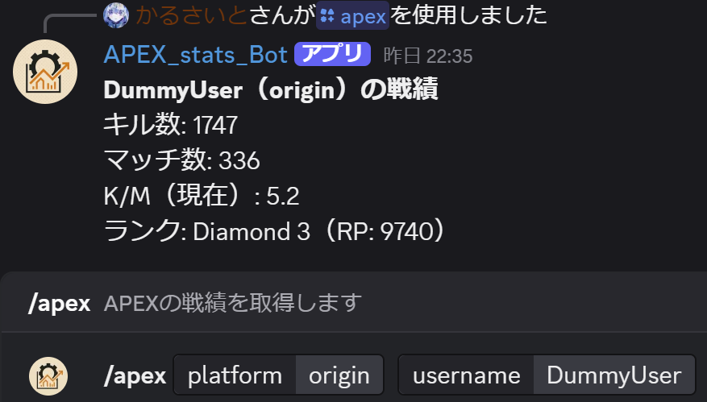
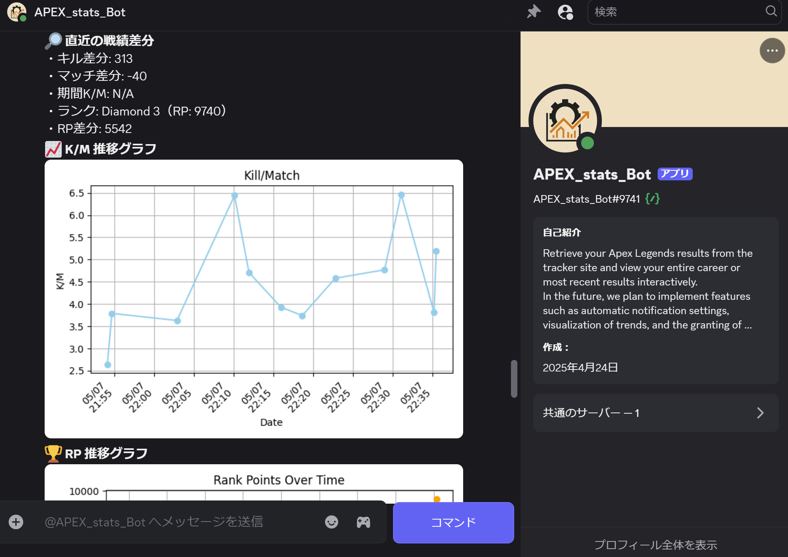

概要
このツールは、APEX Legendsの戦績を追跡するDiscord用のBOTです。
主な機能
- 📝 スラッシュコマンドによるユーザーごとの戦績記録、送信
- 📈 一部のデータの推移をグラフで送信
使用方法
- Discord Developer Portalよりアプリを作成してAPIキーを取得します。
- tracker.gg（TRN）でも同様にアプリを作成してAPIキーを取得します。
- 取得したAPIキーを.envに記載してアプリを起動します。
- Discord Developer Portalで招待URLを発行し、任意のサーバーに招待します。
- /apex platform:yourplatform username:yourname でプレイヤーの統計情報を取得します。 (テキストチャットで'/'と入力するとスラッシュコマンド一覧から選択できます。)
イメージ
コマンドによる情報取得

推移のグラフの例(下記の画像はテスト用ダミーデータ。GitHubで公開しているコードではAPIを使用。/comannd/apex.py12-16行目でAPIによる取得からダミーデータ生成に切り替え可能。)

リンク
今後の予定
- 📅 日付を指定した差分比較コマンド
- 💾 DBへ移行
- 🪪 検索ユーザーを記憶